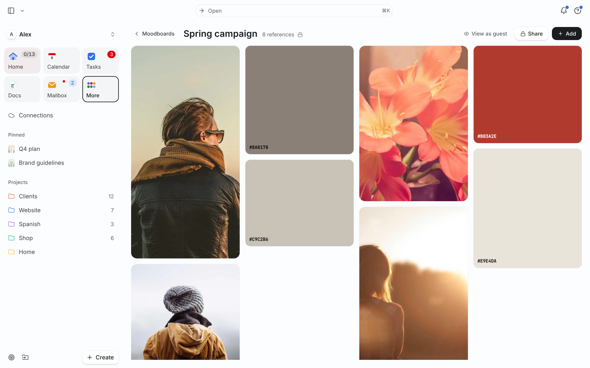

What a moodboard is for
A moodboard makes a direction visible before anyone spends hours producing it. It answers “what should this feel like?” for a brand, a shoot, a room, a website or a video. When a client says “warmer” or “more premium”, a board turns those words into pictures everyone can point at.
Want a ready structure? Start from the moodboard template or, for identity work, the brand moodboard template.
Make one in six steps
- Write a one-line brief (5 min). “Website for a ceramics shop: calm, handmade, a bit playful. Not rustic.” Include one thing it should not be.
- Collect wide (30–45 min). Save 40–60 references: photography, type, textures, packaging, interiors, screenshots of sites you like. Don’t judge yet.
- Cut hard (15 min). Keep 12–20 images that agree with each other. If two images pull in different directions, pick one or make two boards.
- Pull a palette (10 min). Sample 4–6 colors from the kept images. Write the hex codes. One dominant, one or two supporting, one accent.
- Annotate why (10 min). A short note beside key images: “this light, not this product”, “type weight like this”. Notes stop people copying the wrong detail.
- Share and get one round of reactions. Ask: “Which three feel most right? Anything that feels off?” Then revise once and lock it.
Worked example: Alex’s Tuesday board
Alex is redesigning the Shop homepage. Tuesday, October 13:
| Time | Step | Result |
|---|---|---|
| 09:00–09:05 | Brief | “Calm, handmade, a bit playful. Not rustic, not beige.” |
| 09:05–09:45 | Collect | 52 saves: product shots on colored paper, two Japanese packaging examples, a serif with soft curves, glaze close-ups |
| 09:45–10:00 | Cut | 16 kept; all “dark wood” images removed (too rustic) |
| 10:00–10:10 | Palette | #F2EDE4 (base), #2F3A35 (text), #C9704A (glaze accent), #A7B8A8 (support) |
| 10:10–10:20 | Notes | “Shadow like this”, “type weight, not this font”, “colored paper backdrops for product shots” |
| 10:30 | Share | Link sent to the photographer; one comment back: “more texture close-ups” |
Total: about 80 minutes for a board that will steer a two-day shoot and a homepage build.
Moodboards for different jobs
The steps stay the same; what you collect changes with the job:
- Brand identity: logos you admire for their logic (not their look), type pairings, a color palette, packaging, tone-of-voice examples. Use the brand moodboard template.
- Photo or video shoot: lighting, framing, wardrobe, location, poses, color grade. Note lens or time of day if you know it.
- Website: layouts, navigation patterns, type scale, button styles, photography direction. Screenshots beat descriptions.
- Interior or event: materials, textures, furniture shapes, a palette, lighting at night.
- Personal style or project: keep it smaller, 8–12 images, and revisit it monthly.
For any of these, two boards with clearly different directions (“calm and soft” vs. “bold and graphic”) make client decisions faster than one board that tries to please everyone.
From board to decisions
A finished board should produce a short list of decisions you can act on. After sharing, write three to five lines under the board:
- Palette: #F2EDE4 base, #2F3A35 text, #C9704A accent only on buttons.
- Photography: colored paper backdrops, soft side light, no wood.
- Type: soft serif for headings, plain sans for body.
- Not doing: rustic textures, beige-on-beige.
Each decision then becomes work with an owner and a date: a shoot, a type test, a homepage draft. That’s where the board stops being inspiration and starts saving time. If the work involves posting, plan it with the content calendar template.
Common mistakes
- No brief. Without one, the board becomes a collection of things you like, not a direction.
- Too many images. 80 images tell no story. Cutting is the work.
- Mixed directions on one board. If it’s “minimal” and “maximal” at once, split it into two options and let the client choose.
- No notes. People copy the product in a photo when you meant the light.
- Board disconnected from the work. If it lives in a folder nobody opens, it can’t guide decisions. Link it to the project.
How to do it in Needt
- Open Boards and create a board named after the brief, for example “Shop homepage — calm, handmade”.
- Add images, links and notes. Drop in references, paste links, and add notes beside the key ones.
- Add color swatches with hex codes for the palette.
- Link a Pinterest board if that’s where you already collect.
- Share the board with the client or photographer.
- Turn decisions into tasks:
shoot texture close-ups, 90 min, by Friday #Shop, and let them auto-schedule.
The free plan includes one board; Pro is unlimited. In Ask:
Create tasks from the notes on my Shop homepage board and schedule them this week.
More for visual work on the Needt for designers page. Planning the posts that come out of the shoot? See content calendar workflow.